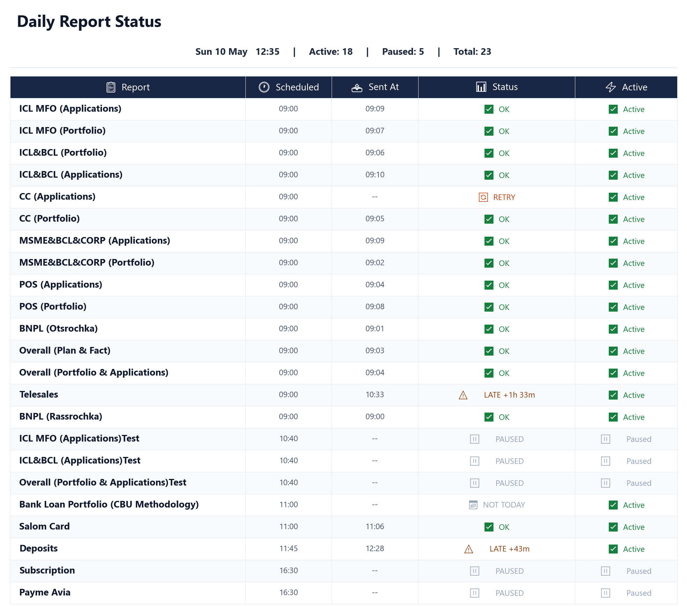

download_bytes, download_text, download_to_file, download_exceldef build_client(config: dict):
if config.get("local_mode", False):
return LocalClient.from_config(config) # reads from synced OneDrive folder
else:
return SharePointClient.from_config(config) # Microsoft Graph API
class SharePointClient:
def _acquire_token(self) -> str:
app = msal.ConfidentialClientApplication(
self.client_id,
authority=f"https://login.microsoftonline.com/{self.tenant_id}",
client_credential=self.client_secret,
)
result = app.acquire_token_for_client(
scopes=["https://graph.microsoft.com/.default"]
)
return result["access_token"]send_days parser supports: *, Mon-Fri, Mon,Wed,Fri, and single-day formatsshould_send_today() called by the scheduler before each job to skip off-schedule daysdef _parse_send_days(raw: str) -> tuple[bool, dict]:
if not val or val == "*":
return True, {d: True for d in WEEKDAYS} # every day
if "-" in val and "," not in val: # range: Mon-Fri
start = WEEKDAYS.index(parts[0].capitalize()[:3])
end = WEEKDAYS.index(parts[1].capitalize()[:3])
active = {d: (start <= i <= end) for i, d in enumerate(WEEKDAYS)}
return False, active
if "," in val: # list: Mon,Wed,Fri
days_on = {d.strip().capitalize()[:3] for d in val.split(",")}
return False, {d: (d in days_on) for d in WEEKDAYS}detect_visible_used_range() skips hidden rows/columns and handles merged cells correctlyThreadPoolExecutor with coalesce=True# Watchdog: force-kill Excel if refresh hangs
def _timeout_kill():
subprocess.call(["taskkill", "/f", "/im", "excel.exe"])
kill_timer = threading.Timer(REFRESH_TIMEOUT_SEC, _timeout_kill)
kill_timer.daemon = True
kill_timer.start()
try:
wb.RefreshAll()
finally:
kill_timer.cancel()
# Retry loop with hard deadline
while True:
try:
send_one_report(report, excel_path)
update_sent_log(report_id, "OK")
return
except Exception as e:
if _now_local() + timedelta(minutes=15) > send_deadline:
update_sent_log(report_id, "FAILED")
return
time.sleep(RETRY_EVERY_MINUTES * 60)threading.Lock prevents write conflicts across 30 concurrent scheduler threadstime, status (OK / LATE / FAILED), datedef update_sent_log(report_id: str, status: str):
with _sent_log_lock: # blocks all other threads while writing
sent_log[report_id] = {
"time": datetime.now().strftime("%H:%M"),
"status": status, # "OK" | "LATE" | "FAILED"
"date": datetime.now().strftime("%Y-%m-%d"),
}
save_sent_log() # persist to disk immediatelytry:
if 'scheduler' in globals() and scheduler.running:
scheduler.shutdown(wait=False)
print("⏹️ Old scheduler stopped")
except Exception as e:
print(f"⚠️ Could not stop old scheduler: {e}")
scheduler = build_scheduler(config_loader, full_config)
scheduler.start()
print("Scheduler started.")files_getUploadURLExternal + files_completeUploadExternal (new Slack API)ts to disk for delete-before-repost across restartsif "FAILED" in status:
txt.set_color("#991b1b") # dark red
txt.set_fontweight("bold")
elif "LATE" in status:
delay = _calc_delay(r.send_time, log_entry.get("time", ""))
status_col = f"⚠️ LATE{delay}" # e.g. "⚠️ LATE +12m"
txt.set_color("#92400e") # amber
elif "OK" in status:
txt.set_color("#15803d") # green
else:
txt.set_color("#94a3b8") # grey — pending / pausedsync_scheduler() to add or reschedule only changed jobsbefore = {rid: {"send_time": r.send_time, "active": r.active}
for rid, r in config_loader.get_all_reports().items()}
config_loader.refresh()
sync_scheduler(scheduler, config_loader)
for rid, r in config_loader.get_all_reports().items():
if rid not in before:
changes.append(f"➕ New report: `{rid}` @ {r.send_time}")
elif before[rid]["send_time"] != r.send_time:
changes.append(f"🕐 `{rid}` rescheduled: {before[rid]['send_time']} → {r.send_time}")
elif before[rid]["active"] != r.active:
flag = "activated ✅" if r.active else "deactivated ❌"
changes.append(f"🔄 `{rid}` {flag}")if 'refresh_thread' not in globals() or not refresh_thread.is_alive():
refresh_thread = threading.Thread(
target=auto_refresh_scheduler,
args=(scheduler, config_loader, full_config, 5),
daemon=True # dies automatically when the notebook shuts down
)
refresh_thread.start()
print("✅ Auto-refresh started — updates every 5 minutes")
else:
print("⚠️ Auto-refresh already running — skipped")run_report_job(force=True, honour_active_flag=False) to bypass all guardsreport_dropdown = widgets.Dropdown(
options=list(config_loader.get_all_reports().keys()),
layout=widgets.Layout(width="500px")
)
def on_send(b):
with output:
output.clear_output()
run_report_job(
report_id = report_dropdown.value,
config_loader = config_loader,
full_config = full_config,
force = True, # skip SQL readiness checks
honour_active_flag = False, # send even if report is paused
)
send_button.on_click(on_send)
display(report_dropdown, send_button, output)